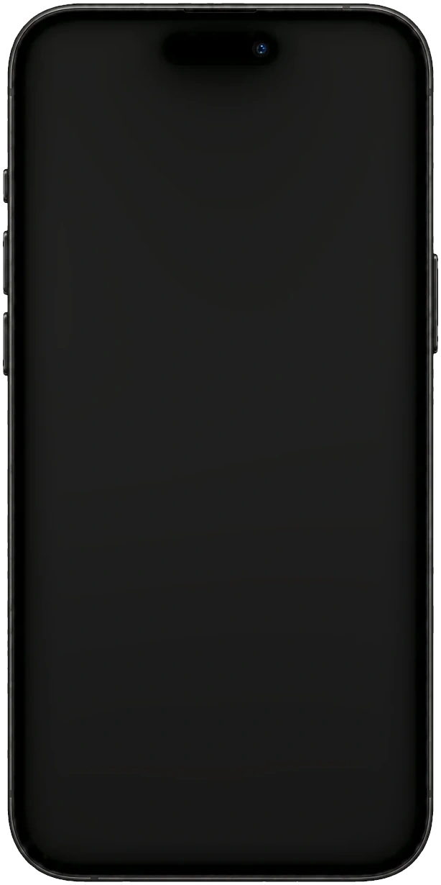

Как помочь пользователю быстрее пополнить игровой баланс и не рассчитывать сумму с учётом конвертации вручную
Бенчмаркинг, проверка гипотез и финальный сценарий для A/B-теста
Моя роль
Изучал данные и решения конкурентов, формулировал и проверял гипотезы, подготовил финальный флоу и передал дизайн в разработку для A/B-теста.
Контекст
Наша команда отвечает за платежи в категориях «Мобильная связь» и «Игры» В мобильной связи саджесты уже показали рост среднего чека и ускорение оплаты, поэтому мы решили протестировать механику и в играх
Увеличить скорость и конверсию успешных оплат, а также создать потенциал для роста среднего чека
Пользователя
Быстро и легко пополнить баланс без дополнительных расчётов
Какая аудитория затронута проблемой
Ежедневно тысячи пользователей совершают платежи в популярных игровых сервисах (например, Steam, Warface, World of Tanks)
MAU в категории «Игры» — десятки тысяч человек, что составляет менее 1% от всех платежей
Критерии успешности
📈 Рост среднего чека
🚀 Увеличение конверсии в оплату
⚡ Ускорение сценария оплаты
Процесс
Discover
Изучил данные (средний чек на транзакцию и траты пользователя в месяц)
Провёл бенчмаркинг конкурентов: смотрел на количество саджестов, суммы, формат
Define
На основе данных и бенчей сформулировал гипотезы и подготовил макеты для тестов
Develop
Протестировал гипотезы
После тестов возникли вопросы о паттернах трат в Steam (игры, кейсы, скины или пополнение «с запасом»).
С центром исследований провели пуш-опрос среди пользователей, которые пополняли Steam.
На синке приоритизировали гипотезы (смотрели на ценность для метрик и сложность реализации)
Deliver
Подготовил итоговый флоу для выбранной гипотезы
Передал дизайн в разработку для запуска А/Б-теста
Бенчмаркинг
Перед формулировкой гипотез я провёл бенчмаркинг: хотел понять, как эта задача решается на рынке. Это позволило зафиксировать базовый паттерн (фиксированные суммы) и убедиться, что есть пространство для экспериментов
Если вместо обычных сумм использовать саджесты с подписью («на игру», «на распродажу», «на новый скин», «на кейсы») и ставить их на первое место + подсветить иконкой + сделать сумму чуть выше средней транзакции, то можно повысить средний чек
Если в саджестах показывать не сумму пополнения, а конечный результат («Чтобы пришло 100 ₽» → в поле автоматически подставляется 110 ₽ с учётом комиссии), то пользователям будет проще достигать нужного баланса и не придётся вручную рассчитывать, сколько закинуть
Может быть непонятен с первого взгляда (почему 110 ₽ подставилось, если я выбрал 100 ₽?)
Требует хорошей визуальной проработки, иначе есть риск путаницы
Гипотеза 4 — Округление с учётом конвертации ✅
Если предлагать суммы пополнения с учётом конвертации — например, 110 ₽ вместо 100 ₽, — пользователям не придётся редактировать сумму вручную. Это может повысить конверсию в успешное пополнение.
Мы добавили саджесты с округлёнными значениями с учётом общей конвертации (~10%), чтобы ускорить сценарий пополнения Steam и избавить пользователей от ручных пересчётов

Другие провайдеры
Для остальных провайдеров мы сделали саджесты с самыми популярными суммами по каждому провайдеру. Так как у них маленький MAU и они не показывают активного роста, мы не прорабатывали гипотезы глубоко. В будущем, если категории будут расти, к ним можно будет вернуться
Задача с саджестами и задача с логином Steamбыли объединены в одну итерацию и вместе ушли в А/Б-тест. На момент моего ухода тест ещё не завершился, поэтому финальных результатов не было